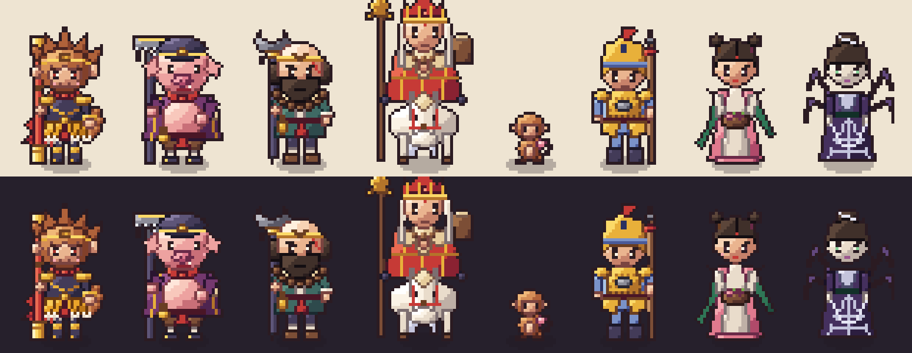
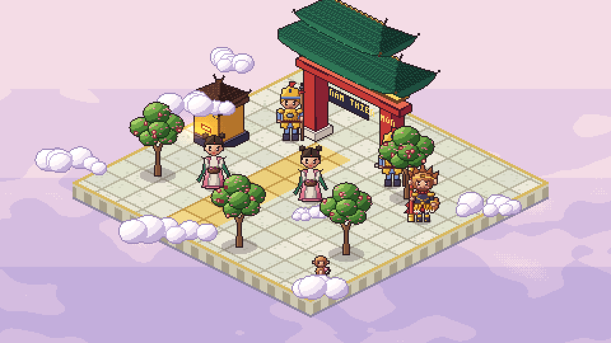
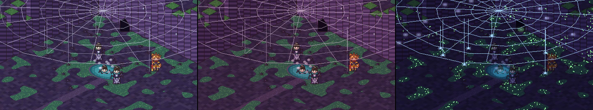
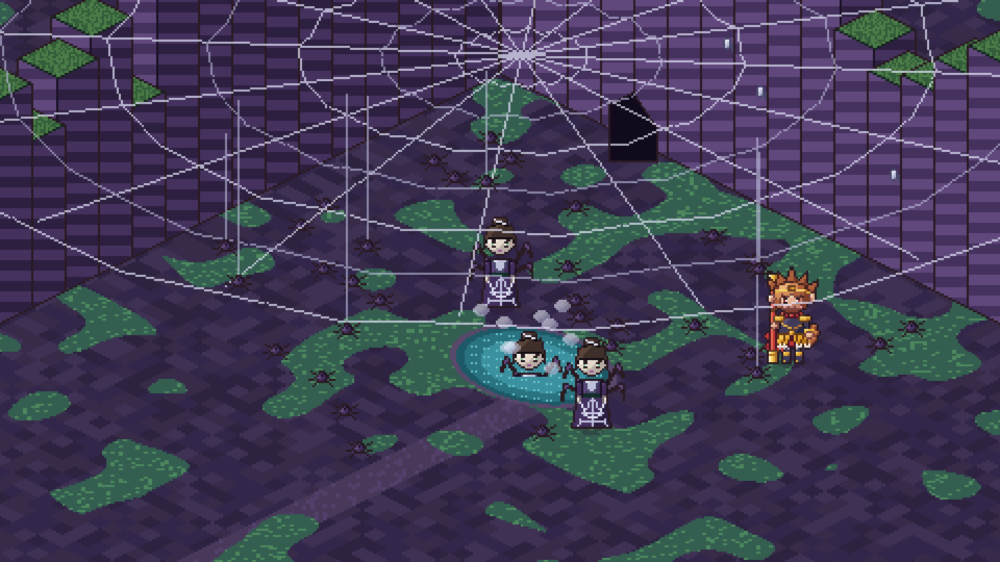
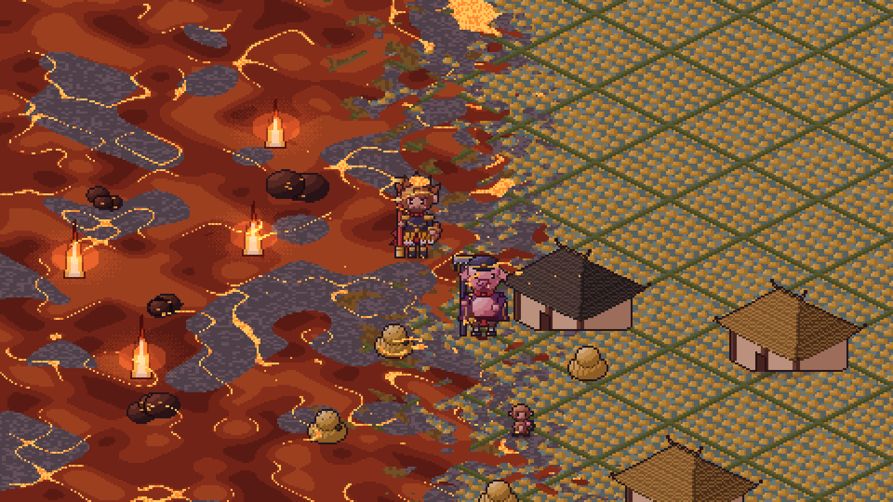

Tây Du Ký — Huyền Thoại Sống · art pilot
Phong cách theo ảnh tham khảo của chủ dự án (references/tayduky/ref). Mọi ảnh là pixel art ở độ phân giải gốc, phóng to theo bội số nguyên (không làm mờ).
Bước 1 · Dàn nhân vật
Ngộ Không, Bát Giới, Sa Tăng, Tam Tạng cưỡi ngựa trắng, khỉ Hoa Quả Sơn, thiên binh, tiên nữ, nhện tinh. Nền sáng và nền tối. Nhân vật cao 48 px (ngựa 60 px).

Bước 2 · Góc Thiên Cung
Nam Thiên Môn mái cong hai tầng, bảng tên, sàn ngọc nổi trên biển mây, mây trôi trên mặt đất, cây đào tiên, lò Bát Quái.

Bước 3 · Hẻm Bàn Tơ Động · ngày / hoàng hôn / đêm
Tông lạnh tím-lục, vòm mạng nhện giữa hai vách đá, nhện khắp nơi, trứng nhện và rêu phát sáng ban đêm, suối nước nóng.



Bước 4 · Ranh giới Hỏa Diệm Sơn ↔ Cao Lão Trang · ngày / hoàng hôn
Viền mang màu của cả hai bên: tro phủ lên ruộng lúa vàng, ruộng cháy sém, nhà tranh bị sém mái, đống rơm dính tro.

